Introducere
Norii ne pot spune multe despre ce vreme urmează. Dacă știi să te uiți după tipul lor, altitudinea și cum arată, poți afla dacă vine soare, ploaie sau chiar furtună. Nu ai nevoie de aplicații meteo sau de cunoștințe complicate, doar ochii tăi și câteva informații simple te pot ajuta să citești cerul.